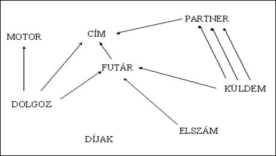

4.1.2. Az adatbázis leírása
(a kulcsok aláhúzással, a külső kulcsok szürkével kiemeltek)
MOTOR {rendsz,
adat1,..., kész}
a motorok törzse; műszaki adatokkal és egy logikai
állapotjelzővel, kész-e a szolgálatra
FUTÁR {fszám,
fnév, fcím, m_váll1,...}
a futárok törzse, névvel, címmel, ami ugyancsak egy CÍMre
mutat, valamint munkavállalási adatokkal
CÍM {cím,
elnev, ker, utca, hsz}
a címek törzse, melyben az elnevezés csak irodaházak és
vegyes intézmények esetén kitöltött (magánszemély lakcímének nincs neve), a kerület, utca és a többi kötelezően kitöltendő
PARTNER {kód,
név, tel, cím}
a partnerek törzse, akik megrendelik, akiktől elszállítják
és akiknek kiszállítják a küldeményeket;
mindegyik egy CÍMre mutat
KÜLDEM {azon,
megrend, kelt, időpont, kitől, kinek, fszám, átvét, átad}
a kelt+időpont-ban felvett küldemények
törzse, melyek mindegyike sorszámot kap, a megrendelő szerint megadott kitől
kinek szállítja egy futár és a felvétel illetve leadás időpontjával jelzi a szállítás
stádiumát
DOLGOZ {dátum,
mettől, fszám, meddig, rendsz, ftel, cím,
szám}
az egyes futárok munkaidejének
(adott dátummal mettől meddig) tárolása az aktuális motorral, pillanatnyi
telefonszámmal (amin elérhető), a pillanatnyi címmel (aminek a közelében
tartózkodik) és az aktuális számlálóval, amiben a rábízott küldeményeket gyűjtjük (másik egyedi kulcsa: dátum, mettől, rendsz)
DÍJAK {mióta,
óradíj, dbár}
az óradíj és a teljesített küldemények
darabára (a legutolsó állapot az aktuális)
ELSZÁM {meddig,
fszám, összeg}
a futárok kifizetéséhez igazolást adunk a teljesítményekről (pl. éppen valahányadikáig)
Fogalmak
- szám: a dolgozó futárhoz pillanatnyilag hozzá tartozó (még nem teljesített) küldemények száma
- összeg: a kifizetendő összeg a teljesítmény alapján
- (meddig - mettől) * óradíj + küldemények_száma * dbár időszakfüggően (Dolgoz.dátum és Küldem.kelt 2 Díjak.mióta közé esésének figyelése alapján illetve az Elszám.meddig óta az aktuális dátumig)
Megszorítások
- kulcsok
(egyik sem lehet null)
- természetesen minden kulcsot ki kell tölteni
- itt adjuk meg, ha lennének a további egyedi kulcsokat, amelyeket nem választottunk meg elsődlegesnek
- külső kulcsok (csak a KÜLDEM.fszám lehet null)
- azokat a külső kulcsokat, amelyek kulcsszerepűek, természetesen ki kell tölteni, de amelyek leírók, azokról eldöntjük, hogy az ügyvitel alapján maradhatnak-e nem kitöltöttek
- itt csak a Küldemény futárszáma maradhat ismeretlen érték a felvitelkor, mert csak később kerül megadásra egy módosítással (amikor találtunk hozzá futárt)
- elnev, átvét, átad, meddig: lehet null
- a többi leíró tulajdonságot is meg kell adni ezen 4 kivételével, ugyanis:
- az elnevezés bizonyos partnerek esetén nem létezik
- a küldemény átvételének és átadásának időpontja jóval később válik ismertté a küldemény megrendelésének felvételénél, ezért majd módosítással kerülnek be egymás után, a futár jelzéseinek hatására
- a munkát felvevő futár adatait tárolva még nem adhatjuk meg, meddig dolgozott
- kész: true/false
logikai őrszem segít a Motorok közül szabadot találni, melyet egy munkafelvevő futárhoz rendelve azonnal hamisra állítunk, munkavégzéskor pedig elbírálás alapján igazra, ha továbbra is alkalmas a szolgálatra
- óradíj, dbár, összeg: nagyobbak 0-nál
- egyszerű feltételek kiosztása a
tulajdonságokhoz:
- az óradíj és darabár input adatok, de csak 0-nál nagyobb értékkel van értelme felvinni
- az összeg számolt adat, de csak 0-nál nagyobb értékkel van értelme tárolni
- szám >= 0 a számlálóként működő tulajdonság aktív dolgozónál 0-nál nagyobb (esetlegesen felülről korlátozható), várakozó dolgozó futárnál (és a munkát leadó futárnál) pedig 0
- ahány kész motor van, annyi futár dolgozhat egyszerre
fontos szabály, nem muszáj önálló megszorításként megadni, ugyanis. egy dolgozó futárt csak akkor szabad felvenni, ha van még szabad motor
Kapcsolatok

Minden nyíl a sok felől mutat az egy felé.
Megjegyzések:
- A KÜLDEM:PARTNER párhuzamos kapcsolatok ábrázolhatók 3 partnerrel is (Megrendelő, Kitől, Kinek)
- A DÍJAK tábla csak a külső kulcs hiánya miatt izolált tábla, hiszen a DOLGOZ és a KÜLDEM tábla is egyértelműen rámutat. Ez a hozzájuk tartozó sor intervallum-kereséssel adható vissza, mint odaillő sor (mert azonosan egyenlő csak elvétve fordulhat elő).